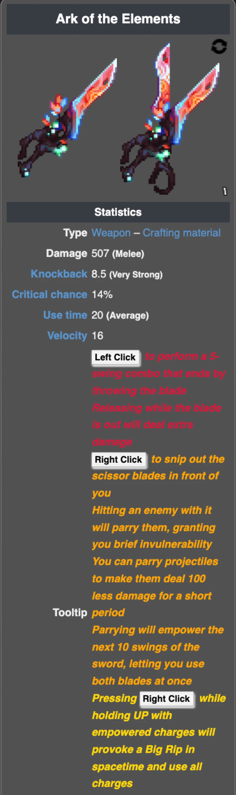
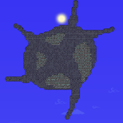
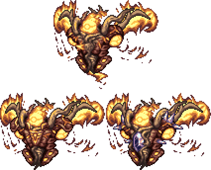
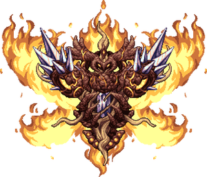
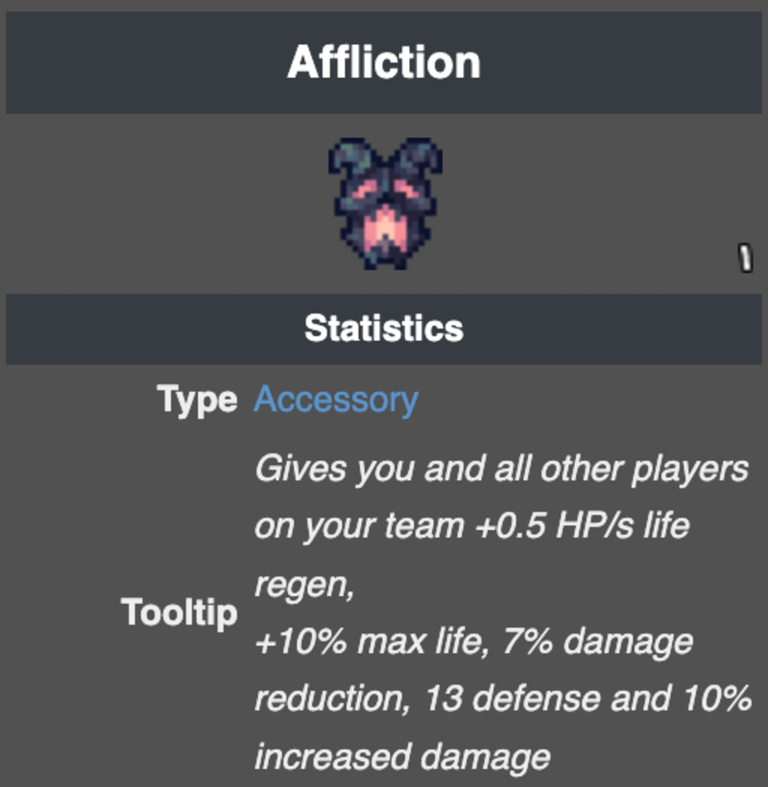
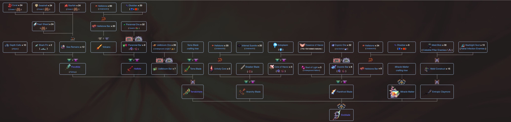

The Introduction
Pre-Hardmode
Hardmode
Post-Moonlord
About Me
POST-MOONLORD
So you've made it. Impressive. Now, let's get straight into it. Before you do anything, craft a set of Solar Flare Armor using Solar Fragments and Luminite Bars, as well as a Lunar Pickaxe. Any one of the four works. Calamity actually generates new Luminite Planetoids for you to mine at your leisure. It also generates Exodium Clusters outside of the Luminite, although it's pretty irrelevant. Anyways, new enemies begin spawning in the Hallow and in the Underworld, or Hell as everyone calls it. Defeat some of these enemies to obtain Unholy Essence. However, before fighting the next boss, you should upgrade your gear. Armour isn't an issue, as I have already covered that. In terms of accessories, unless you are playing in Master Mode, the Moonlord drops a Celestial Onion, which also gives you an extra accessory slot. But now, combine any pair of wings with your Angel Treads and some Luminite Bars to create the Celestial Traces. Now you can run fast and fly in one accessory! Next, you should also keep using the Community and The Absorber, as they provide great buffs. In terms of weapons, the most viable weapon for this time is the Ark of the Elements. Made with its predecessor, the Ark of the Ancients, Luminite Bars, Galactica Singularities crafted with one of each Pillar Fragment, and Life Alloys, with the Ark of the Ancients itself crafted from ITS predecessor, the Fractured Ark, a Broken Hero Sword, and a Starfury. It does... a lot. I'm not going to cover it all, so I'll just let the tooltip speak for itself. Now, you should be geared up enough to fight the Profaned Guardians. Farm some of the new enemies I mentioned before for Unholy Essence, and combine 25 of it with 5 Luminite Bars to create the Profaned Shard. You can either fight the Guardians in the Underworld or the Hallow, however it won't matter until you reach Providence where you fight them.
The Profaned Guardians are actually a set of three enemies; the Healer, the Defender, and the Commander. You cannot damage the Commander until both the Healer and the Defender are defeated. The Healer will, well, heal the Defender. The Defender will launch barrages of rocks at you as well as charge at you. As long as you can keep track of the Guardians, they should not be a problem for you. Once defeated, they will drop the Profaned Core, used to summon Providence, the Profaned Goddess. Providence drops unique items based on where you kill her, being the Elysian Aegis when killed in the Underworld and the Elysian Wings when killed in the Hallow. She has an extremely large health pool for this point in progression, with her having 600,000 HP in Revengeance Mode. She will occasionally hide in her rock form, signalled by her flames going out. In this phase, she takes massively reduced damage and will fire patterns of projectiles at you, with another column being tracked towards your location. She will also sometimes burn your wings, decreasing your flight time by 33%, signalled by "Holy flames burn away at your wings...". Just a warning, DO NOT FIGHT HER AT NIGHTTIME. She will become enraged, become blue, and deal double damage. At 1/3rd HP, she will summon the Guardians to protect her. The Offensive Guardian increases her attack, the Defensive Guardian increases her base defense to 100, and the Healer Guardian allows her to heal 0.5% of her maximum HP every second. However, they have far less HP than their boss counterparts. Defeating them quickly will allow you to deal maximum damage to Providence. However, once you kill her, she still has a last stand. For a few seconds, she will start spewing out as many projectiles as she can, before exploding into a "supernova". After being defeated, she will drop the unique drop depending on the biome, and also the Rune of Kos, used to summon the Servants of the Devourer of Gods.
Let's not get too hasty though. Providence drops the Holy Collider, a useful true melee weapon that can be viable for the Devourer of Gods. Now, since Providence has been defeated, Uelibloom Ore begins to spawn in the Jungle. Mineable with a Lunar Pickaxe, you can turn it into Uelibloom Bars and combine it with Divine Geodes dropped by Providence to create your next armour set;  the Tarragon Armor. It provides a useful +1.5HP/s healing buff when hit, and an ability that reduces contact damage by 50% for 10 seconds. Now, we can make some really good weapon upgrades. Remeber your Terra Blade? There's an upgrade for it. Combine your Terra Blade with a Hellkite, made from the Volcano and Perennial Bars, a Floodtide, made from Sea Remains, Depth Cells from the Abyss, and Shark Fins, with Uelibloom Bars to make the Terratomere. The Terratomere is an amazing weapon for when you don't want to aim. You can also make the Lifehunt Scythe from Uelibloom Bars, which summons a scythe projectile that has lifesteal. And you can get another health upgrade, the Elderberry. Made from Life Fruit, Uelibloom Bars, Divine Geodes and Unholy Essence, it gives you another 25 max HP. Next, let's take a small detour and head back into Hardmode. Why? Because we still need to fight the Ravager. He should be no problem for your current gear, although the reason we put him off for so long is because his drops change after you beat Providence. Instead of receiving a Fleshy Geode when he dies, you receive a Necromantic Geode. Necromantic Geodes drop Bloodstone, needed for the next armour set, which is Bloodflare Armor. However, we are mainly focusing about the other drops. He drops Cores of Calamity as well as Life Alloys now, alongside the already pre-existing Scoria, Perennial and Cryonic Bars needed to craft said Life Alloys. You also obtain the Blood Pact from Ravager, which I've mentioned before. If you haven't already, PLEASE equip it. It is incredibly good for survivability, with its insane health boosts. Now that he's out of the way, we can focus on the Rune of Kos you've gotten from Providence.
the Tarragon Armor. It provides a useful +1.5HP/s healing buff when hit, and an ability that reduces contact damage by 50% for 10 seconds. Now, we can make some really good weapon upgrades. Remeber your Terra Blade? There's an upgrade for it. Combine your Terra Blade with a Hellkite, made from the Volcano and Perennial Bars, a Floodtide, made from Sea Remains, Depth Cells from the Abyss, and Shark Fins, with Uelibloom Bars to make the Terratomere. The Terratomere is an amazing weapon for when you don't want to aim. You can also make the Lifehunt Scythe from Uelibloom Bars, which summons a scythe projectile that has lifesteal. And you can get another health upgrade, the Elderberry. Made from Life Fruit, Uelibloom Bars, Divine Geodes and Unholy Essence, it gives you another 25 max HP. Next, let's take a small detour and head back into Hardmode. Why? Because we still need to fight the Ravager. He should be no problem for your current gear, although the reason we put him off for so long is because his drops change after you beat Providence. Instead of receiving a Fleshy Geode when he dies, you receive a Necromantic Geode. Necromantic Geodes drop Bloodstone, needed for the next armour set, which is Bloodflare Armor. However, we are mainly focusing about the other drops. He drops Cores of Calamity as well as Life Alloys now, alongside the already pre-existing Scoria, Perennial and Cryonic Bars needed to craft said Life Alloys. You also obtain the Blood Pact from Ravager, which I've mentioned before. If you haven't already, PLEASE equip it. It is incredibly good for survivability, with its insane health boosts. Now that he's out of the way, we can focus on the Rune of Kos you've gotten from Providence.
The Rune of Kos is used to summon the Servants of the Devourer of Gods. Signus, Envoy of the Devourer, Storm Weaver, and Ceaseless Void. Depending on where you use the Rune, a different boss spawns. Signus is spawned in the Underworld, Ceaseless Void is spawned in the Dungeon, and Storm Weaver is spawned in Space. The Servants should be no problem with the Terratomere, although Ceaseless Void may take the longest to kill, since they have intervals of phases that force you to attack the orbs surrounding it before you can actually damage it. Storm Weaver has high damage reduction, however once you get it to a certain percentile of HP, it's armour breaks and it will take damage normally from all sources. They each drop a unique material, along with a special accessory and weapon. Each one of these materials are needed to craft the summon for the Devourer of Gods. However, we aren't going there just yet. We still have some upgrades to obtain. You may notice new enemies spawning in the Dungeon, with some having over 1,000 HP. When these high-health enemies die, they spawn a Phantom Spirit. Once killed, these Spirits drop Necroplasm, which can be used for a variety of upgrades, however we won't need it yet. You may notice after killing a certain amount of them, status messages appear. When you kill 30 of these spirits...
"Polterghast has awoken!" W-what?! Yeah, Polterghast just jumpscares you out of nowhere and you're sent into his bossfight instantly after defeating the 30th Phantom Spirit. I guess he really likes to scare people. Anyways, the base fight of Polterghast acts extremely similarly to Plantera. The only difference is that Polterghast can spawn a clone of itself to charge at you, as well as using its hooks to shoot projectiles at you. It's a decently difficult fight, mainly due to the fact that you barely have any space to weave around in the Dungeon without prior preparation. All of your gear from Post-Providence suffices greatly, although you can get many upgrades after Polterghast. Speaking of which, Polterghast drops Ruinous Souls, which can be used to craft your next set of armour; Bloodflare Armor. Remember the Bloodstone you got from Ravager? You're going to need it. Create Bloodstone Cores from Bloodstone, Blood Orbs, and Necroplasm, and combine it with Ruinous Souls to get your armour. Alongside the Ruinous Souls, Polterghast also drops the Affliction accessory, which provides various boosts that are very useful. You may also alternatively go for a glass cannon build with Omega Blue Armor, crafted with materials retrieved from the Void Layer of the Abyss, exchanging life regeneration for raw damage. Another great weapon you can use for the Devourer of Gods is the Death's Ascension. Crafted with the Death Sickle dropped by Reapers in the Solar Eclipse, Ruinous Souls, Twisting Nether, and Souls of Night, its main fire is a true melee swing, however its alternate fire shoots out a barrage of homing scythes that deal massive damage. Now, with this, you should be ready to face the Devourer of Gods.
Craft the Cosmic Worm using one of each Servant material, and get ready for a tough fight. The Devourer of Gods does not play around with his food, and with you AS his food, he packs quite the punch. His entire body has 92.5% damage resistance, except for his head and tail, which actually take increased damage from all sources. He will aggressively approach you, and if you get hit by his head, let's just say it won't end well. A whopping 750 damage in Revengeance. He will occasionally fire barrages of lasers at you, as well as being extremely long, so looping may be difficult. He will also summon Cosmic Guardians to assist him in battle. Once he reaches 60% HP, he retreats into a portal and...
"It's not over yet!"
The Devourer of Gods will burst out of the portal, into his second phase, where everything does more damage. He even unlocks new attack patterns, such as a grid of lasers that force the player to weave between them. He will gradually become more aggressive, even being able to charge at you. At 20% HP, he will summon more Cosmic Guardians and become more aggressive. Yapping aside, I want you to go listen to his theme. It's actually insane. I am still baffled on how DM Dokuro made all of these themes. Anyways, after a long, grueling, difficult, excrutiating, and infuriating fight, you have finally conquered the Devourer of Gods. A plethora of things are unlocked after his defeat, however, first things first, the Eulogy for the Ego mix of Scourge of the Universe.It is way too good. Next, you may notice three status messages, each alluding to the three Moon events. The Solar Eclipse, the Frost Moon, and the Pumpkin Moon. The enemies are massively buffed, and they each drop new materials. Solar Eclipse enemies drop Darksun Fragments, Frost Moon enemies drop Endothermic Energy, and the Pumpkin Moon enemies drop Nightmare Fuel. These can be used to craft Post-Devourer gear, but most importantly, we must first craft the Cosmic Anvil. Crafted from your Hardmode Anvil, with Cosmilite dropped by the Devourer as well as Luminite Bars, Galactica Singularities, and Exodium Clusters. With the new Cosmic Anvil, you can now craft Ascendant Spirit Essence, required for the Godslayer Armor set. Crafted from the three Moon event drops, as well as Necroplasm. Craft your Godslayer Armor with Cosmilite and Ascendant Spirit Essence, as well as the Asgardian Aegis and Elysian Tracers, made from the previous unique Providence drops I talked about earlier. You can also make the Elemental Gauntlet, a very useful melee tool for damage and debuffs. With this, you can also craft the Chalice of the Blood God, a high risk-high reward accessory that provides you with increased life regeneration, shorter healing potion cooldowns, as well as the maximum HP boost that Blood Pact has, at the cost of turning all damage into a bleeding effect that will not stop until you are either dead or have taken all the damage. The Devourer of Gods also drops the Excelsus, a great weapon and a good alternative to the Death's Ascension for your next boss. However, before we get onto that, let's take a detour to the depths of the
a high risk-high reward accessory that provides you with increased life regeneration, shorter healing potion cooldowns, as well as the maximum HP boost that Blood Pact has, at the cost of turning all damage into a bleeding effect that will not stop until you are either dead or have taken all the damage. The Devourer of Gods also drops the Excelsus, a great weapon and a good alternative to the Death's Ascension for your next boss. However, before we get onto that, let's take a detour to the depths of the  Underworld. In one particular pocket of the Underworld, there is a Bio-center lab. Enter that, loot the chests to get the Murasama. An extremely powerful true melee sword, where it's only drawback being that it's a true melee sword. Now, there are a few bosses left before the endgame point. You're almost there. Your next challenge is Yharon, the Dragon of Rebirth.
Underworld. In one particular pocket of the Underworld, there is a Bio-center lab. Enter that, loot the chests to get the Murasama. An extremely powerful true melee sword, where it's only drawback being that it's a true melee sword. Now, there are a few bosses left before the endgame point. You're almost there. Your next challenge is Yharon, the Dragon of Rebirth.
In order to get Yharon's summoning item, you must get Effulgent Feathers. Effulgent Feathers are dropped by the Dragonfolly, a Post-Moonlord boss able to be fought as soon as the Solar Pillar has been defeated. It should be no problem for you at this point, so we will skip over it. Once you have your Effulgent Feathers, combine it with Life Alloys to get the Blessed Phoenix Egg. Use it to summon Yharon, the Jungle Dragon. He will always aggressively charge at you, dealing extremely high damage in the process. He will also enclose you to an area bordered by fire walls. Exiting these fire walls will instantly kill you, as Yharon enrages and deals 5x the damage. He will also spawn fire tornadoes at your location as well as fireballs that linger in place for a short time. While the first phase is boring but also nothing to laugh at...
The air is getting warmer around you...
Yharon enters his second phase, with massively buffed attacks as well as one of the best video game themes ever. Just see for yourself... Anyways, Yharon becomes much more aggressive as well, spawning bullet hell patterns as well as his normal dashes. Once he dies, he has a desperation phase in which he releases bullet hell patterns of fireballs where he was killed. Congratulations. You've reached the end game. Auric Ore begins to generate in the mines, and I hope you've made a Blossom Pickaxe from Uelibloom. Auric Ore damages you upon contact, so be wary. While all this happens, get an amazing final interlude before the last two bosses. Good luck. You'll need it. Make sure to craft Auric Tesla Armor from your Tarragon, Godslayer and Bloodflare Armors, and upgrade your Ark of the Elements to the Ark of the Cosmos, craft the Ataraxia,  as well as using the Burning Sky and the Dragon Rage droppped by Yharon. Make sure to also upgrade your Elysian Tracers to the Seraph Tracers, the final upgrade to the Hermes Boots upgrade tree. You may also like to use The Sponge as well, crafted from your Rover Drive and other materials. Other than that, get ready for the last two bosses. The Cosmic Engineer and the Brimstone Witch remain.
as well as using the Burning Sky and the Dragon Rage droppped by Yharon. Make sure to also upgrade your Elysian Tracers to the Seraph Tracers, the final upgrade to the Hermes Boots upgrade tree. You may also like to use The Sponge as well, crafted from your Rover Drive and other materials. Other than that, get ready for the last two bosses. The Cosmic Engineer and the Brimstone Witch remain.
We start with The Cosmic Engineer, Draedon, and the Exo Mechs. Better hope you've been grinding your Draedon Power Cells, because you'll need a lot of it. Find the schematics scattered throughout the world, and collect Power Cell Factories to produce Draedon power Cells. You must decrypt these schematics in order to craft the Codebreaker, needed to summon the Exo Mechs. After you craft the Codebreaker, you can summon the Exo Mechs.
Now, choose.
You get to choose between the three Exo Mechs, and which to fight first. XF-09 Ares, based off of Skeletron Prime. It has four superweapons that are capable of annihilating you so much as if you take one hit too many. XS-01 Artemis and XS-03 Apollo, based on the Twins. Aggressive and fast, Artemis picks you off with accurate lasers and Apollo charges at you. And last but not least, XM-05 Thanatos, based on the Destroyer. Incredibly hard to kill while also shooting lots of lasers at you. Pick your poison. The fight itself has 7 phases. The first phase is your chosen mech on its own. The second phase brings in the other two mechs once the first mech reaches 70% HP, and the third phase brings back your chosen mech. The fourth phase involves the first mech to be brought down to 40% HP, in which you kill your first mech. The fifth and sixth phase includes the other two mechs, and once one is brought down to 40%, you are forced to defeat them. The seventh and final phase involves the last mech going absolutely haywire, attacking you with everything that it can muster before you defeat it. One thing to note, XM-05 Thanatos will only take 1 damage from all sources unless they are attacking, in which selected body parts will have steam coming out of them as well as it glowing red on the minimap. I heavily suggest using the Dragon Rage against Thanatos, as the baton-like swing is able to hit many targets at once. And after a very grueling and admittedly rage-inducing fight, the Cosmic Engineer goes down.
You have way too many options for upgraded weapons at this time. But one thing is for certain. Equip the Draedon's Heart. It reworks Adrenaline into the Nanomachines Bar, massively increasing your survivability with its almost 50 base defense. You can also go for the Exoblade, with an absolute behemoth of a crafting tree. Now, with your final gear, it's time to face the Brimstone Witch, Calamitas.
Calamitas is a long and grueling fight, with an absolute symphonic masterpiece of a boss theme. She has four phases, each being signalled by a distinct part of the song. The starting phase is Grief, then when the background turns blue, it reaches Lament. Then Epiphany, and when you beat her, Acceptance. Her main gimmick is using bullet hell patterns of skulls, so using Draedon's Exo Box mount is heavily recommended. All of her projectiles do massive damage, so avoid them at all costs. Once Epiphany starts, she will summon a literal BLACK HOLE to follow you for the rest of the fight, putting constant pressure on you as you avoid everything else. And after all that, she will... move into your town as an NPC. Yeah, I'm not explaining this one.
"Congratulations."
You've conquered Calamity Mod. Next, you could try some addons such as Wrath of the Gods or Infernum. I'm not in control now. I hope you've at least seen what Calamity can offer, and even if my guidance was a bit hazy at times, I sure hope you enjoyed playing through Calamity as much as I did. Until next time, Terrarian.